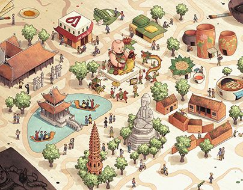

02 · 文化空间
京北大地与梂江两岸
官贺民歌的生命力，深深扎根于北宁、北江一带的村落共同体之中。

京北区域
京北不是单纯的行政名称，而是承载历史记忆的文化地理空间。北宁官贺民歌正是在这一历史空间中形成，并在村落、河岸、庙会与节庆之间延续。

梂江两岸
梂江两岸聚集着许多传统官贺村。河流既是交通通道，也是文化象征，连接了村落之间的往来、节日中的会唱和歌声中的离别意象。
四十九个村落
20世纪70年代以后，学者和管理机构普遍确认，北宁官贺民歌的实际传承范围包括现今北宁省44个村落和北江省5个村落。这些村落虽分属不同省份，却在文化上共同构成了连续的官贺文化空间。